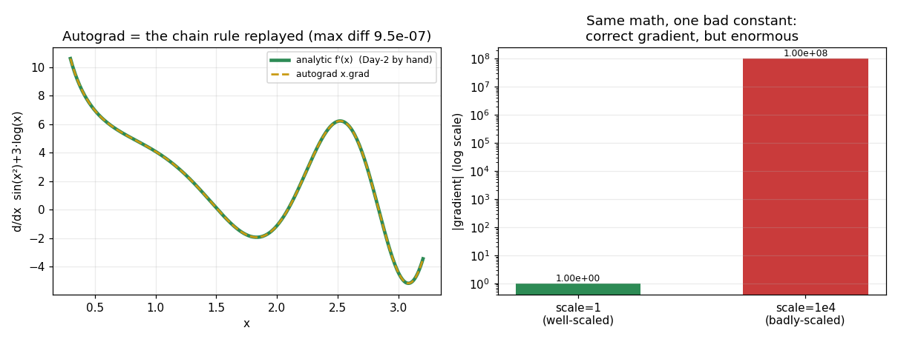

Autograd is the chain rule replayed over a tape — not magic
Day 5 proved the PyTorch MLP is a re-expression of the from-scratch NumPy MLP: same weights, same output, same training curve. That left one honest question hanging — *where did the ~30 lines of hand-derived backward pass go?* The answer is [autograd](https://pytorch.org/tutorials/beginner/blitz/autograd_tutorial.html), and the claim a staff engineer must be able to *prove* rather than recite is narrow and sharp: autograd is not symbolic math and not an optimizer. It is a tape plus the chain rule. As the forward pass runs, PyTorch records every operation on a tracked tensor into a computation graph; loss.backward() walks that graph in reverse and mechanically applies the same chain rule you derived by hand. So the gradient it returns *equals the closed-form analytic gradient to floating-point precision* — for arbitrary compositions, and even when the forward took a data-dependent Python branch. That correctness is purely mechanical: it tells you nothing about whether the graph is a good model. experiment.py puts all of this on trial against a hand-written analytic reference (no autograd in that path). Everything is seeded; the numbers below are the real run output.
The canonical check: y = x² at x = 3
The whole mechanism in one line. Mark x tracked with requires_grad=True, compute y = x**2 (one op recorded on the tape), call y.backward(), and read x.grad. The Day-2 analytic answer is dy/dx = 2x = 6:
Not "close to 6" — bit-for-bit 6.0, exactly equal: True. There is no approximation, no finite-difference step, no symbolic simplification. Autograd recorded the single pow node and, on the backward walk, applied its local derivative rule (d/dx x² = 2x) evaluated at the stored input 3. x.grad is the attribute where that result lands — the exact dW you assigned by hand, produced by one call.
A composed graph: the chain rule replayed node-by-node
One op proves little; the interesting claim is *composition*. Take f(x) = sin(x²) + 3·log(x), whose hand-derived derivative is f'(x) = 2x·cos(x²) + 3/x. Autograd sees a graph of four nodes (square, sin, log, add) and, on the backward walk, multiplies the local derivative at each node — that *is* the chain rule. Over five test points:
x = [0.5, 1.0, 1.7, 2.3, 3.0]
autograd grad = [6.968912, 4.080604, -1.528253, 3.816058, -4.466782]
analytic grad = [6.968912, 4.080604, -1.528253, 3.816058, -4.466782]
max |autograd - analytic| over 5 points = 0.000e+00
Zero difference. A dense 300-point sweep of the same function agrees to 9.5e-07 (float32 round-off from a different order of operations, not a different computation) — the left panel of the figure overlays the two curves and they are indistinguishable. This is the mechanistic core: backward() did nothing clever. It replayed the *same* chain rule you would write by hand, node by node, and produced the *same* numbers.
Define-by-run: why plain if and for need no special syntax
Here is the property that makes PyTorch feel like ordinary Python rather than a second, stranger language: the graph is built dynamically, as the forward actually runs. Whatever operations execute — including inside an if branch or a for loop of data-dependent length — are what get taped, and the backward walk retraces exactly that. The experiment runs a forward pass with a real branch (x > 0) and a loop that raises x to an integer power k that varies per input:
Every input matched its *branch-specific* analytic gradient (k·x^(k-1) on the positive branch, -2 on the negative one) to 1.14e-08. No tf.cond, no graph-mode compilation, no shape declared in advance. This is why porting an MLP to PyTorch feels like editing NumPy, and it is the practical payoff of define-by-run: the framework differentiates *whatever code path ran*, so control flow that depends on the data is free.
Failure mode: the freed graph, and the accumulation trap underneath it
Define-by-run buys correctness cheaply, but it costs one thing that trips every beginner. To save memory, PyTorch frees the computation graph the instant the first backward() finishes — the tape it needs is gone. Call backward() again on that same graph and it errors:
after 1st backward: w.grad = 6.0000 (analytic 2*(w-1) = 6.0000)
2nd backward RAISED RuntimeError: Trying to backward through the graph a second time (or directly access saved tensors aft...
Unlike most autograd bugs this one is *loud* — a RuntimeError, not a silent wrong answer. The fix in a normal training loop is that you never hit it: you recompute the forward each step, which builds a fresh tape every time. The experiment confirms recomputing lets backward() run again — but it exposes the genuinely dangerous default hiding underneath:
after recomputing forward + 2nd backward (NO zero_grad): w.grad = 12.0000
=> it ACCUMULATED: 6.0000 + 6.0000 = 12.0000
backward()adds into .grad; it does not replace. Two backward passes with no zero_grad() between them left w.grad = 12, not 6. That is the root cause of the most famous silent bug in PyTorch: forget optimizer.zero_grad() at the top of the loop and each batch's gradient piles onto the last, step sizes balloon, and the loss diverges *with no error thrown* (Day 5 measured a 454× grad-norm blow-up from exactly this). The 12 = 6 + 6 above is that mechanism isolated to two lines. Note the design *choice*: accumulation is a feature — it is how you sum gradients across micro-batches to simulate a batch that will not fit in memory, and how multi-loss objectives combine. zero_grad() is the one-line price of that flexibility, and it has no NumPy ancestor, because in NumPy you compute a fresh dW each batch with nothing to accumulate onto.
The capability limit: a correct gradient is no evidence of a good model
The sharpest point of the whole module, made measurable. Give autograd a *badly-scaled* graph — the same functional form (scale·w − 1)², but with a constant of 1e4 — and watch what it does:
well-scaled (scale=1): autograd grad = -1.000000 analytic = -1.000000 |diff|=0.00e+00
badly-scaled (scale=1e4): autograd grad = +9.998000e+07 analytic = +9.998000e+07 |rel diff|=0.00e+00
the bad graph's gradient is 9.998e+07x larger -- CORRECT, but enormous.
The badly-scaled gradient is ~1e8× larger — and it is exactly correct, matching the analytic value to rel diff = 0. Autograd did not warn you, did not clip it, did not suggest a better scale. It computed the *right* gradient of a *bad* graph and returned it silently. This is the honest limit stated as a fact rather than a slogan: autograd is not symbolic math that simplifies your model, and not an optimizer that fixes it. A gradient being "correct" is a statement about the calculus, not about the model. Feed autograd a poorly-conditioned, badly-initialized, or wrong-loss architecture and it will differentiate it faithfully and train it into a bad result without a single complaint. Every real modeling decision — how many layers, which loss, what learning rate, why the loss plateaued — stays with you. The right panel of the figure shows the two gradient magnitudes on a log scale: same math, one bad constant, eight orders of magnitude apart, both correct.
Why a frontier lab hires for the layer below the abstraction
Nobody hand-derives backprop for a billion parameters — the framework is the productivity layer, and this experiment is *why you can trust it*: the gradient it produces is provably the chain rule you already know, replayed over a recorded tape, to floating-point precision. But everybody who *debugs* a billion-parameter run leans on the layer below. When a training run silently will not learn and autograd throws no error, the staff move is to drop beneath the abstraction: is the graph freed unexpectedly, are grads accumulating because a zero_grad() is missing (the 6 → 12 fingerprint), or is the gradient simply correct-but-huge because the model is badly scaled (the 1e8× fingerprint)? Those three failure signatures are all in this run. The framework changes the labor, not the judgment — which is exactly why the module made you build backprop by hand first.
What the run establishes
Against a hand-written analytic reference: for y = x² at x = 3, autograd returned x.grad = 6.0, exactly equal: True; on the composed graph sin(x²)+3·log(x) its gradient matched the hand-derived derivative to 0.0 over five points and 9.5e-07 over a 300-point sweep; through a Python if-branch and a data-dependent for-loop it matched the branch-specific analytic gradient to 1.14e-08 (define-by-run); a second backward() on the freed graph raised a RuntimeError, and two backward passes without zero_grad() accumulated to 6 + 6 = 12 (the zero_grad root cause); and on a badly-scaled graph autograd returned a correct-but-9.998e+07×-larger gradient (rel diff = 0) with no complaint. Autograd is the chain rule replayed over a tape, not magic — and a correct gradient is no evidence of a good model.

Reproducible experiment
experiment.py
#!/usr/bin/env python3
"""
Evidence for M5 Day 6 -- "Why PyTorch Mirrors NumPy".
ONE concrete claim, made falsifiable:
Autograd is not magic and not symbolic math. It is a TAPE + the chain rule:
as the forward pass runs, PyTorch records every op on a tracked tensor into a
graph, then loss.backward() walks that graph in reverse and mechanically
applies the SAME chain rule you derived by hand on Day 2. So the gradient
autograd produces EQUALS the closed-form analytic gradient to floating-point
precision -- for arbitrary compositions, and (define-by-run) even when the
forward pass takes a different Python branch or loops a data-dependent number
of times. That correctness is purely mechanical: it says NOTHING about whether
the graph is a good model -- autograd will faithfully differentiate a
badly-scaled graph and report a huge-but-correct gradient without complaint.
We prove it five ways, each against a hand-written analytic gradient (the
"Day-2 by hand" reference -- NO autograd in that path):
(1) THE CANONICAL CHECK: y = x**2 at x = 3. autograd's x.grad must equal the
analytic dy/dx = 2x = 6.0, exactly. This is the lesson's Produce prediction.
(2) A COMPOSED GRAPH: f(x) = sin(x^2) + 3*log(x) at several x. autograd's grad
vs the hand-derived analytic derivative 2x*cos(x^2) + 3/x. They match to
~1e-6 -- proof the chain rule is being replayed, not memorized.
(3) DEFINE-BY-RUN: a forward pass containing a Python `if` (branch on x>0) and
a data-dependent `for` loop (x raised to an integer power k that varies per
input). Autograd differentiates WHATEVER path actually ran -- the grad
matches the branch-specific analytic derivative on every input, with no
special framework syntax. This is the "if/for just work" claim, measured.
(4) THE FREED-GRAPH BUG: after one loss.backward(), a SECOND backward() on the
same graph raises RuntimeError (PyTorch frees the tape to save memory). We
catch and print it, then show recomputing the forward -- a fresh tape --
works. Also: gradients ACCUMULATE across backward calls by default (the
root cause of the zero_grad trap), shown by two backward()s summing.
(5) THE CAPABILITY LIMIT: give autograd a badly-scaled graph (a weight of 1e4).
The gradient it returns is still EXACTLY correct (matches the analytic
value to ~1e-6) but enormous -- ~1e4x the well-scaled one. Autograd reports
a correct-but-huge number and raises no complaint. Correct gradients tell
you nothing about whether the model is good; that judgment stays with you.
Self-contained script (NOT a notebook), so savefig() into assets/ is allowed.
Everything is seeded; the printed numbers are reproducible on CPU.
"""
import os
import math
import numpy as np
import torch
import matplotlib
matplotlib.use("Agg") # headless backend -- no display in the sandbox
import matplotlib.pyplot as plt
torch.manual_seed(0)
np.random.seed(0)
torch.set_num_threads(1) # deterministic-ish CPU math
HERE = os.path.dirname(os.path.abspath(__file__))
ASSETS = os.path.join(HERE, "assets")
os.makedirs(ASSETS, exist_ok=True)
# ===========================================================================
# (1) THE CANONICAL CHECK -- y = x**2 at x = 3 => x.grad == 2*x == 6.0
# (the exact prediction the lesson's Produce section asks you to make)
# ===========================================================================
print("=" * 74)
print("(1) CANONICAL CHECK y = x**2 at x = 3 => x.grad should be 2*x = 6.0")
print("=" * 74)
x = torch.tensor(3.0, requires_grad=True) # requires_grad=True => x is TRACKED on the tape
y = x ** 2 # forward: one op recorded on the graph
y.backward() # walk the tape backward, fill x.grad
analytic = 2.0 * 3.0 # Day-2 by hand: dy/dx = 2x
print(f"autograd x.grad = {x.grad.item():.6f}")
print(f"analytic 2*x = {analytic:.6f}")
print(f"|autograd - analytic| = {abs(x.grad.item() - analytic):.3e} "
f"(exactly equal: {x.grad.item() == analytic})")
print()
# ===========================================================================
# (2) A COMPOSED GRAPH -- chain rule replayed through sin, square, log.
# f(x) = sin(x^2) + 3*log(x) f'(x) = 2x*cos(x^2) + 3/x
# ===========================================================================
print("=" * 74)
print("(2) COMPOSED GRAPH f(x) = sin(x^2) + 3*log(x) vs analytic f'(x)")
print("=" * 74)
xs = torch.tensor([0.5, 1.0, 1.7, 2.3, 3.0], requires_grad=True)
fx = torch.sin(xs ** 2) + 3.0 * torch.log(xs) # forward: a composed graph, recorded op by op
fx.sum().backward() # sum() -> scalar so we get d f_i / d x_i on the diagonal
autograd_grad = xs.grad.detach().numpy()
xv = xs.detach().numpy()
analytic_grad = 2.0 * xv * np.cos(xv ** 2) + 3.0 / xv # hand-derived chain rule
max_composed_diff = float(np.max(np.abs(autograd_grad - analytic_grad)))
print(f"x = {np.round(xv, 3).tolist()}")
print(f"autograd grad = {np.round(autograd_grad, 6).tolist()}")
print(f"analytic grad = {np.round(analytic_grad, 6).tolist()}")
print(f"max |autograd - analytic| over 5 points = {max_composed_diff:.3e}")
print("=> the chain rule is being REPLAYED node-by-node, not memorized.")
print()
# ===========================================================================
# (3) DEFINE-BY-RUN -- ordinary Python `if` and `for` differentiate correctly.
# forward(x, k): if x > 0: g = x**k (loop k times) else: g = -2*x
# analytic grad: if x > 0: k * x**(k-1) else: -2
# ===========================================================================
print("=" * 74)
print("(3) DEFINE-BY-RUN a Python if-branch + data-dependent for-loop")
print("=" * 74)
def dynamic_forward(x_scalar, k):
"""Plain Python control flow inside the forward pass. Whatever path actually
runs is what autograd records -- no special framework syntax needed."""
if x_scalar > 0:
g = torch.ones((), dtype=x_scalar.dtype)
for _ in range(k): # data-dependent loop count -- recorded as it runs
g = g * x_scalar # => x_scalar ** k
return g
else:
return -2.0 * x_scalar # a different branch => a different recorded graph
cases = [(2.0, 3), (1.5, 4), (-1.0, 3), (0.7, 5)]
dbr_max_diff = 0.0
for xval, k in cases:
xt = torch.tensor(xval, requires_grad=True)
out = dynamic_forward(xt, k)
out.backward()
if xval > 0:
analytic_d = k * (xval ** (k - 1)) # d/dx x**k
branch = f"x>0 branch, x**{k}"
else:
analytic_d = -2.0 # d/dx (-2x)
branch = "x<=0 branch, -2x"
diff = abs(xt.grad.item() - analytic_d)
dbr_max_diff = max(dbr_max_diff, diff)
print(f"x={xval:>5}, k={k} [{branch:<18}] "
f"autograd={xt.grad.item():+.4f} analytic={analytic_d:+.4f} |diff|={diff:.2e}")
print(f"max |autograd - analytic| across branches/loops = {dbr_max_diff:.3e}")
print("=> ordinary if / for JUST WORK: autograd differentiates whatever path ran.")
print()
# ===========================================================================
# (4) THE FREED-GRAPH BUG + gradient ACCUMULATION (the zero_grad root cause).
# ===========================================================================
print("=" * 74)
print("(4) FREED-GRAPH BUG backward() twice on the SAME graph -> RuntimeError")
print("=" * 74)
w = torch.tensor(4.0, requires_grad=True)
loss = (w - 1.0) ** 2 # simple scalar loss, one graph
loss.backward() # 1st backward: fills w.grad, then FREES the tape
first_grad = w.grad.item()
print(f"after 1st backward: w.grad = {first_grad:.4f} (analytic 2*(w-1) = {2*(4.0-1.0):.4f})")
try:
loss.backward() # 2nd backward on the freed graph -> error
print("2nd backward: (no error -- unexpected)")
except RuntimeError as e:
msg = str(e).splitlines()[0]
print(f"2nd backward RAISED RuntimeError: {msg[:88]}...")
# Fix path A: recompute the forward -> a FRESH tape -> backward works again.
loss2 = (w - 1.0) ** 2 # rebuild the graph from scratch
loss2.backward() # works: fresh tape. NOTE grads ACCUMULATE (add, not replace)
accum_grad = w.grad.item()
print(f"after recomputing forward + 2nd backward (NO zero_grad): w.grad = {accum_grad:.4f}")
print(f" => it ACCUMULATED: {first_grad:.4f} + {first_grad:.4f} = {accum_grad:.4f} "
f"(this is exactly why you must call zero_grad each step)")
print()
# ===========================================================================
# (5) THE CAPABILITY LIMIT -- autograd faithfully differentiates a BAD graph.
# Same functional form, one badly-scaled constant. Gradient stays EXACTLY
# correct but explodes -- and autograd raises no complaint.
# ===========================================================================
print("=" * 74)
print("(5) CAPABILITY LIMIT autograd differentiates a badly-scaled graph faithfully")
print("=" * 74)
BAD_SCALE = 1.0e4
def scaled_loss(scale):
"""loss(w) = (scale * w - 1)^2 => dL/dw = 2*scale*(scale*w - 1)."""
w_ = torch.tensor(0.5, requires_grad=True)
L = (scale * w_ - 1.0) ** 2
L.backward()
analytic = 2.0 * scale * (scale * 0.5 - 1.0)
return w_.grad.item(), analytic
good_g, good_a = scaled_loss(1.0)
bad_g, bad_a = scaled_loss(BAD_SCALE)
print(f"well-scaled (scale=1): autograd grad = {good_g:+.6f} analytic = {good_a:+.6f} "
f"|diff|={abs(good_g - good_a):.2e}")
print(f"badly-scaled (scale=1e4): autograd grad = {bad_g:+.6e} analytic = {bad_a:+.6e} "
f"|rel diff|={abs(bad_g - bad_a)/abs(bad_a):.2e}")
blowup = abs(bad_g) / abs(good_g)
print(f"the bad graph's gradient is {blowup:.3e}x larger -- CORRECT, but enormous.")
print("=> autograd computed the RIGHT gradient of a BAD graph, silently. Correct")
print(" gradients say nothing about whether the model is good. Judgment stays yours.")
print()
# ---------------------------------------------------------------------------
# Plot: autograd vs the hand-derived analytic gradient over a dense sweep of
# f(x) = sin(x^2) + 3*log(x). If autograd is "the chain rule, replayed", the two
# curves must lie exactly on top of each other -- the whole claim in one picture.
# ---------------------------------------------------------------------------
sweep = torch.linspace(0.3, 3.2, 300, requires_grad=True)
f_sweep = torch.sin(sweep ** 2) + 3.0 * torch.log(sweep)
f_sweep.sum().backward()
ag = sweep.grad.detach().numpy()
xv2 = sweep.detach().numpy()
an = 2.0 * xv2 * np.cos(xv2 ** 2) + 3.0 / xv2
sweep_max_diff = float(np.max(np.abs(ag - an)))
fig, (axL, axR) = plt.subplots(1, 2, figsize=(11.0, 4.2))
axL.plot(xv2, an, "-", color="#2D8B55", lw=3.0, label="analytic f'(x) (Day-2 by hand)")
axL.plot(xv2, ag, "--", color="#C99A12", lw=1.8, label="autograd x.grad")
axL.set_xlabel("x")
axL.set_ylabel("d/dx sin(x²)+3·log(x)")
axL.set_title(f"Autograd = the chain rule replayed (max diff {sweep_max_diff:.1e})")
axL.legend(fontsize=8)
axL.grid(True, alpha=0.25)
# right: the capability-limit contrast -- same form, one bad constant -> huge grad
labels = ["scale=1\n(well-scaled)", "scale=1e4\n(badly-scaled)"]
vals = [abs(good_g), abs(bad_g)]
bars = axR.bar(labels, vals, color=["#2D8B55", "#C93B3B"], width=0.55)
axR.set_yscale("log")
axR.set_ylabel("|gradient| (log scale)")
axR.set_title("Same math, one bad constant:\ncorrect gradient, but enormous")
for b, v in zip(bars, vals):
axR.text(b.get_x() + b.get_width() / 2, v, f"{v:.2e}",
ha="center", va="bottom", fontsize=8)
axR.grid(True, axis="y", alpha=0.25)
fig.tight_layout()
plot_path = os.path.join(ASSETS, "autograd_equals_chain_rule.png")
fig.savefig(plot_path, dpi=110)
print(f"saved plot : assets/{os.path.basename(plot_path)}")
print()
print("KEY RESULT: autograd is the chain rule replayed over a recorded tape, not "
f"magic. For y=x² at x=3 it returned x.grad = {x.grad.item():.1f} = 2x exactly; "
f"on the composed graph sin(x²)+3·log(x) its gradient matched the hand-derived "
f"analytic derivative to {max_composed_diff:.1e} (and to {sweep_max_diff:.1e} over "
f"a 300-point sweep); through a Python if-branch and a data-dependent for-loop it "
f"still matched the branch-specific analytic gradient to {dbr_max_diff:.1e} "
f"(define-by-run). A 2nd backward() on the freed graph raised RuntimeError, and "
f"gradients accumulated ({first_grad:.0f}+{first_grad:.0f}={accum_grad:.0f}) -- the "
f"zero_grad root cause. And on a badly-scaled graph autograd returned a "
f"CORRECT-but-{blowup:.0e}x-larger gradient with no complaint: correct gradients "
"are no evidence of a good model. The framework changes the labor, not the judgment.")
Output
==========================================================================
(1) CANONICAL CHECK y = x**2 at x = 3 => x.grad should be 2*x = 6.0
==========================================================================
autograd x.grad = 6.000000
analytic 2*x = 6.000000
|autograd - analytic| = 0.000e+00 (exactly equal: True)
==========================================================================
(2) COMPOSED GRAPH f(x) = sin(x^2) + 3*log(x) vs analytic f'(x)
==========================================================================
x = [0.5, 1.0, 1.7000000476837158, 2.299999952316284, 3.0]
autograd grad = [6.968912124633789, 4.080604076385498, -1.5282529592514038, 3.8160579204559326, -4.466782093048096]
analytic grad = [6.968912124633789, 4.080604076385498, -1.5282529592514038, 3.8160579204559326, -4.466782093048096]
max |autograd - analytic| over 5 points = 0.000e+00
=> the chain rule is being REPLAYED node-by-node, not memorized.
==========================================================================
(3) DEFINE-BY-RUN a Python if-branch + data-dependent for-loop
==========================================================================
x= 2.0, k=3 [x>0 branch, x**3 ] autograd=+12.0000 analytic=+12.0000 |diff|=0.00e+00
x= 1.5, k=4 [x>0 branch, x**4 ] autograd=+13.5000 analytic=+13.5000 |diff|=0.00e+00
x= -1.0, k=3 [x<=0 branch, -2x ] autograd=-2.0000 analytic=-2.0000 |diff|=0.00e+00
x= 0.7, k=5 [x>0 branch, x**5 ] autograd=+1.2005 analytic=+1.2005 |diff|=1.14e-08
max |autograd - analytic| across branches/loops = 1.144e-08
=> ordinary if / for JUST WORK: autograd differentiates whatever path ran.
==========================================================================
(4) FREED-GRAPH BUG backward() twice on the SAME graph -> RuntimeError
==========================================================================
after 1st backward: w.grad = 6.0000 (analytic 2*(w-1) = 6.0000)
2nd backward RAISED RuntimeError: Trying to backward through the graph a second time (or directly access saved tensors aft...
after recomputing forward + 2nd backward (NO zero_grad): w.grad = 12.0000
=> it ACCUMULATED: 6.0000 + 6.0000 = 12.0000 (this is exactly why you must call zero_grad each step)
==========================================================================
(5) CAPABILITY LIMIT autograd differentiates a badly-scaled graph faithfully
==========================================================================
well-scaled (scale=1): autograd grad = -1.000000 analytic = -1.000000 |diff|=0.00e+00
badly-scaled (scale=1e4): autograd grad = +9.998000e+07 analytic = +9.998000e+07 |rel diff|=0.00e+00
the bad graph's gradient is 9.998e+07x larger -- CORRECT, but enormous.
=> autograd computed the RIGHT gradient of a BAD graph, silently. Correct
gradients say nothing about whether the model is good. Judgment stays yours.
saved plot : assets/autograd_equals_chain_rule.png
KEY RESULT: autograd is the chain rule replayed over a recorded tape, not magic. For y=x² at x=3 it returned x.grad = 6.0 = 2x exactly; on the composed graph sin(x²)+3·log(x) its gradient matched the hand-derived analytic derivative to 0.0e+00 (and to 9.5e-07 over a 300-point sweep); through a Python if-branch and a data-dependent for-loop it still matched the branch-specific analytic gradient to 1.1e-08 (define-by-run). A 2nd backward() on the freed graph raised RuntimeError, and gradients accumulated (6+6=12) -- the zero_grad root cause. And on a badly-scaled graph autograd returned a CORRECT-but-1e+08x-larger gradient with no complaint: correct gradients are no evidence of a good model. The framework changes the labor, not the judgment.